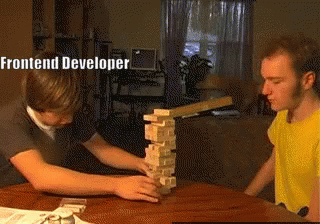

Week 4: CSS
Reading Response: Writing Your Best Code
Shay Howe's article on organizing CSS was super helpful, but also called me out on almost everything I
was doing wrong (which is the point I suppose lol). It's interesting because when I first started
coding, I never really paid much attention to learning how to organize it. But through these past two
assignments, I'm realizing more and more that I won't be able to continue on with my current organization
system. For documentation and archival purposes, here are some of the points Howe made that I found
incredibly pertinent to my own methods of coding:
- Use lowercase letters within element names, attributes, and values
- Indent nested elements
- Strictly use double quotes, not single or completely omitted quotes
- Remove the forward slash at the end of self-closing elements
- Omit the values on Boolean attributes
- always use alt because people need it if an image doesn't show/people who use text--> speech
- clean your divs up, you don't need so many
- Organize the code with comments
- Make sure you're naming classes and ids keeping the future of your website in mind
Response to the Assignment:
Like last week's assignment, this one was hard, but allowed more freedom to explore the possibilities of
HTML. In terms of CSS exploration however, it was a little harder considering we were limited quite a
bit, making my sites seem a bit awkward. Although I did feel confined, I felt that the elements we
have been working with have gotten cemented into my conscious (to the point where I'm not constantly
checking the W3schools.com site anymore).
I believe recipes 1-5 for this week were honestly a little easier to control than recipes 6-10. They were
also easier to format, in that I didn't have to worry about as many elements. Recipe 1 was a simple
exploration of div structure. Recipe 2 built on the div structure by playing with the dimensionality of
the webpage through different heading sizes. Page 3 I experimented with padding sizes while also
making the page layout more succinct, but still keeping the dimentionality. Then I decided to go off the
rails with recipes 4 and 5, as I discovered the beauty of the float element as well as the top,
bottom, right and left elements.
In recipes 6-10 I added the next eight CSS elements allowed to us. Recipe 6 deals with dimentionality
again, but also allowed me font-freedom in which I took great liberties. Recipe 7 I used float,
position, font and font-weight, and laid out a random looking recipe that is still legible through use of
the float elements. Recipe 9 was an attempt to stylize the recipe and create a light feeling to
the directions, while 10 did the opposite and proves quite annoying to read.

Home